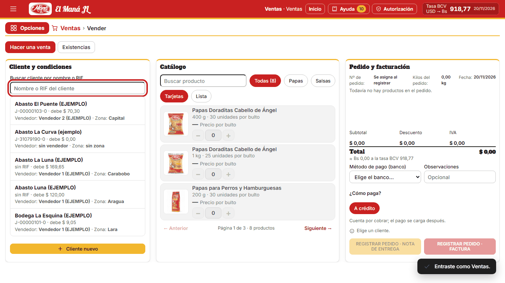
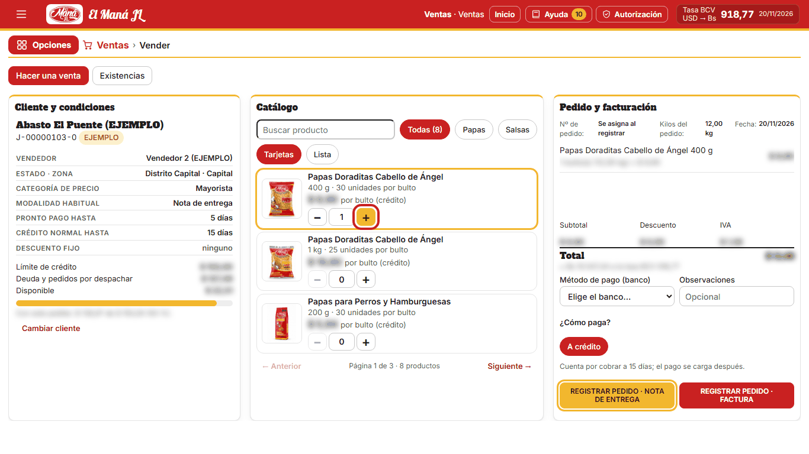
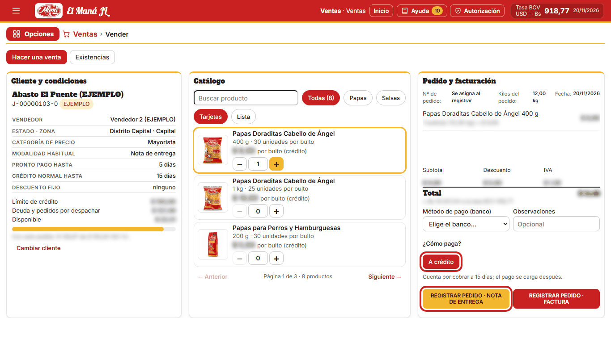
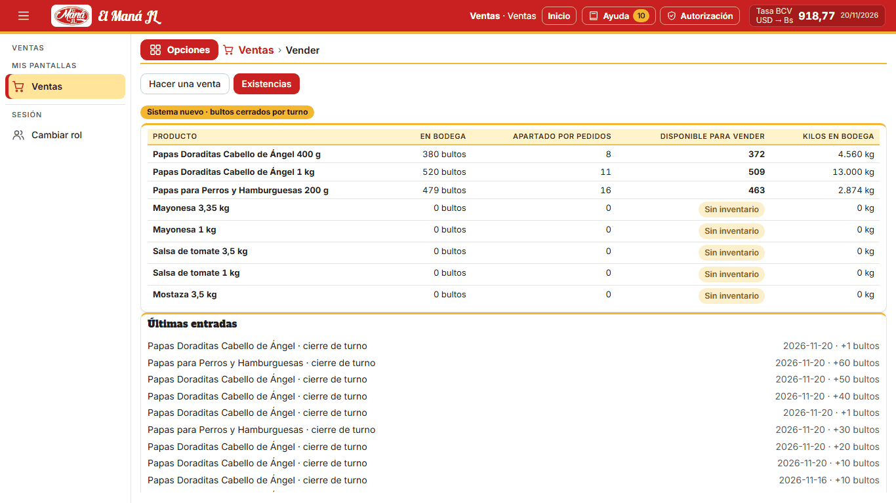
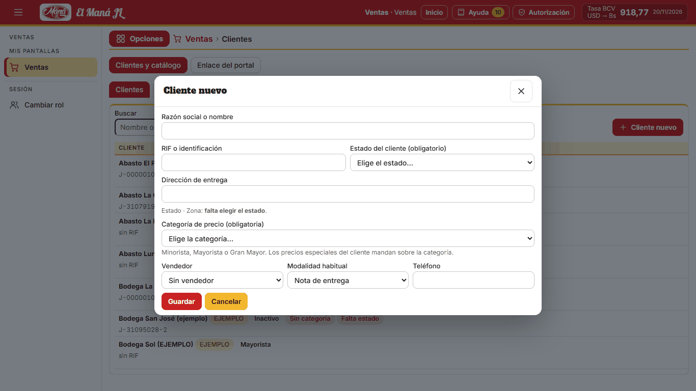
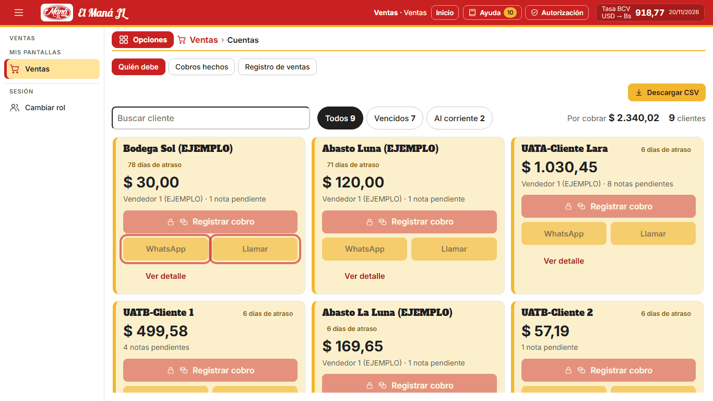
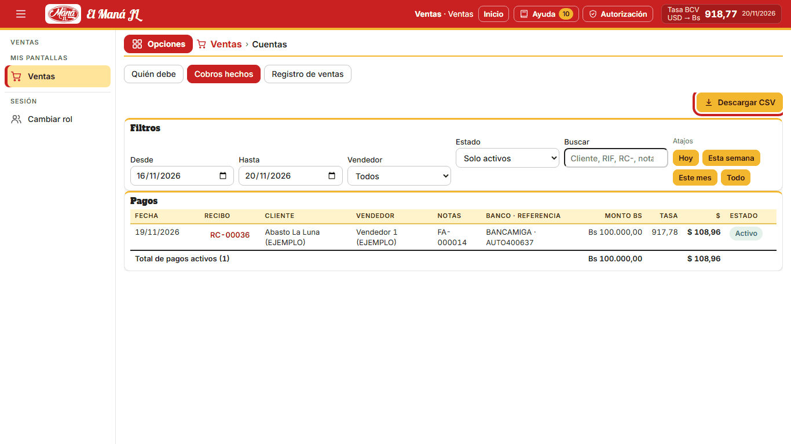
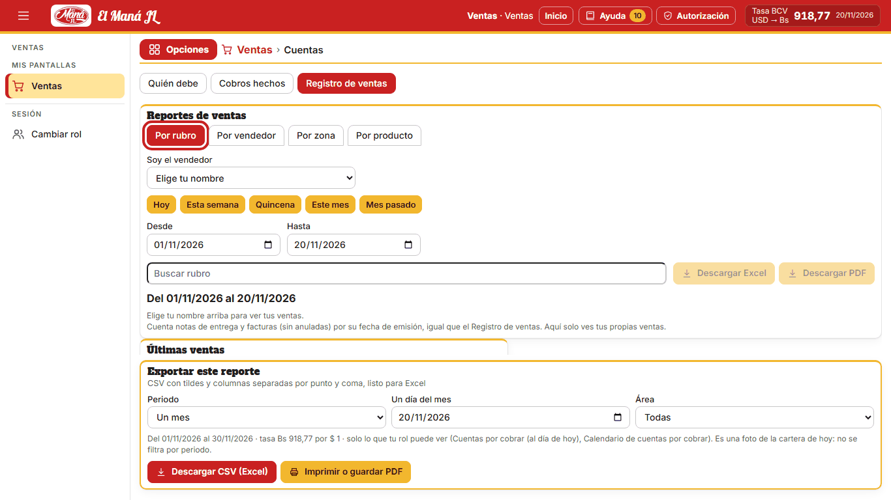
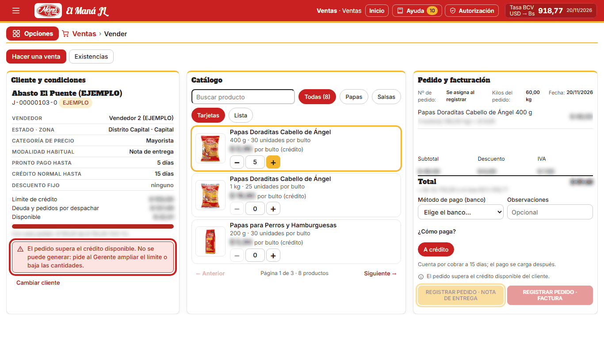

Ventas atiende a los clientes: busca al cliente, arma el pedido, lo registra y entrega la nota de entrega o la factura. También mira cuánto producto hay disponible, quién debe y cómo van las ventas.
Ventas no cambia precios. Si un precio no está o está mal, se pide a Gerencia o Administración con «Pedir autorización».
Mi día en 5 pasos
Entra al sistema y elige Ventas.
Mira Existencias para saber qué hay disponible.
Haz cada venta en Hacer una venta.
Mira Quién debe y recuérdale el pago a quien debe.
Al terminar, mira Reportes de ventas para ver cómo va el día.
Cómo entro y elijo mi puesto
Abre el sistema.
Pulsa el botón Ventas.
Se abre la pantalla Vender.

Pantalla para elegir el puesto
Si ves otro puesto arriba, pulsa Cambiar rol (a la izquierda) y elige Ventas.
Cómo hago una venta
Pulsa Opciones y elige Vender. Se abre Hacer una venta.
En Buscar cliente por nombre o RIF escribe el nombre del cliente.
Toca al cliente en la lista.
En Catálogo, busca el producto (puedes tocar Papas o Salsas).
Pon los bultos del producto con + y −.

Cliente elegido y bultos en el pedido
Mira el Total en Pedido y facturación.
En ¿Cómo paga? deja marcado A crédito: la cuenta queda por cobrar y el pago lo registra Administración.

Forma de pago del pedido
Pulsa REGISTRAR PEDIDO · NOTA DE ENTREGA (o REGISTRAR PEDIDO · FACTURA si el cliente pide factura).
Pulsa Descargar PDF y entrégale el documento al cliente.
Si no está el cliente: mira «Cómo agrego un cliente nuevo».
Cómo veo qué hay disponible
Pulsa Opciones y elige Vender.
Pulsa el botón Existencias.
Busca el producto: ves cuántos bultos hay.

Existencias disponibles
También en el Catálogo de cada venta aparece «Disponibles: N bultos» debajo de cada producto.
Cómo agrego un cliente nuevo
Pulsa Opciones y elige Clientes.
Pulsa Cliente nuevo.
Escribe la razón social o el nombre.
Escribe el RIF o la identificación.
Elige el estado del cliente (es obligatorio: de ahí sale la zona de entrega).
Elige su categoría de precio: Minorista, Mayorista o Gran Mayor.
Escribe la dirección de entrega, el vendedor, la modalidad habitual y el teléfono.
Pulsa Guardar.

Formulario de cliente nuevo
También puedes pulsar Cliente nuevo dentro de Hacer una venta.
Cómo veo quién debe
Pulsa Opciones y elige Cuentas.
Abre Quién debe.
Busca al cliente en la lista.
Pulsa WhatsApp o Llamar para recordarle el pago.

Lista de quién debe
Cómo veo los cobros hechos
Pulsa Opciones y elige Cuentas.
Abre Cobros hechos.
Mira la tabla de cobros.
Si la necesitas, pulsa Descargar CSV.

Cobros hechos
Cómo veo los reportes de ventas
Pulsa Opciones, elige Cuentas y abre Registro de ventas.
Busca la tarjeta Reportes de ventas. En Soy el vendedor elige tu nombre.
Elige la pestaña: Por rubro, Por vendedor, Por zona o Por producto.
Elige el período: Hoy, Esta semana, Quincena, Este mes o Mes pasado.

Reportes de ventas
Si algo sale mal
El sistema no me deja registrar la venta
Pasa si: no hay existencias, falta el precio o el cliente pasó su límite de crédito («El pedido supera el crédito disponible»).
Lee el aviso rojo que sale junto al cliente y junto a los botones.
Baja las cantidades o cambia de producto o de cliente.
Si hace falta más crédito, pídelo a Gerencia con «Pedir autorización».
Pulsa otra vez el botón de registrar.

Aviso junto al botón de registrar
Falta un precio
Avisa a Gerencia o Administración.
O pulsa Autorización (arriba) y luego Pedir autorización.